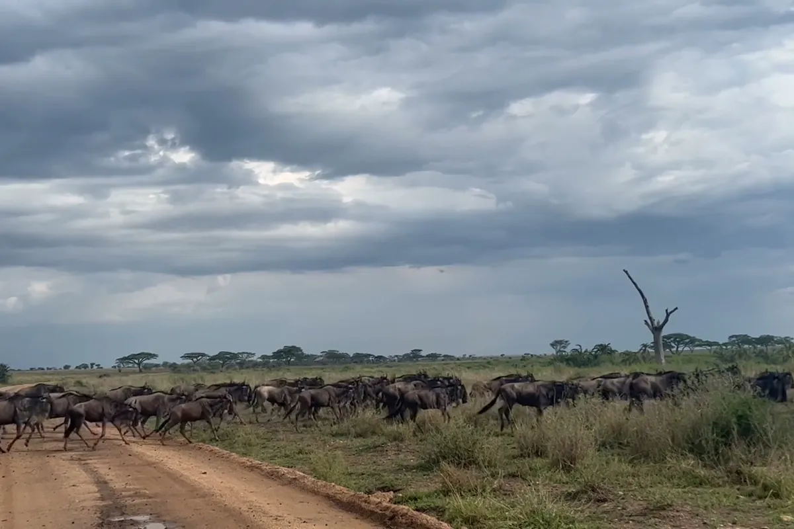
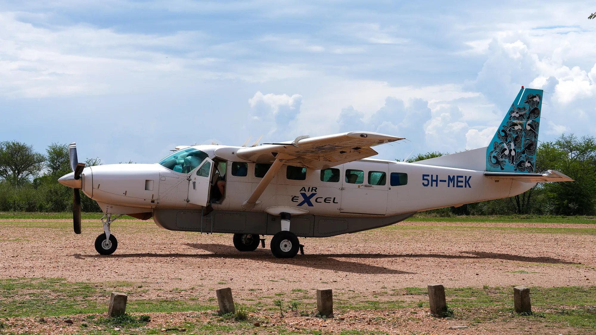
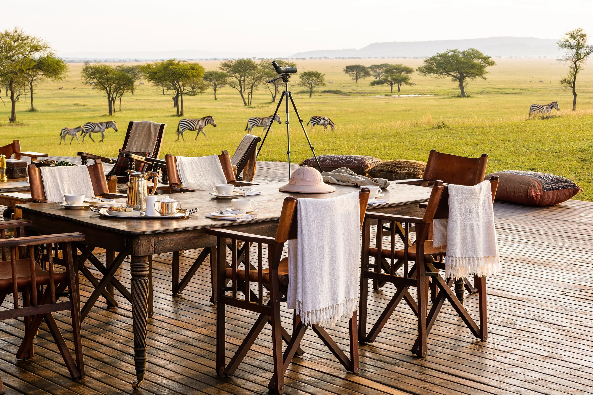
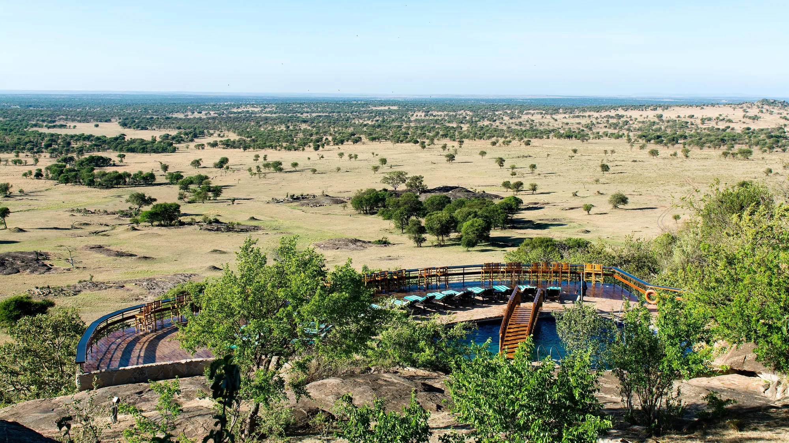
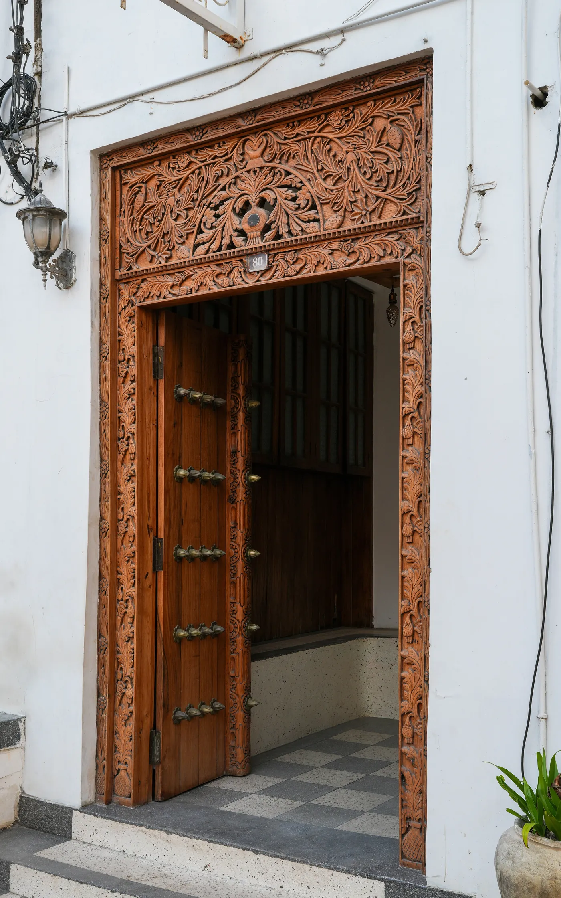
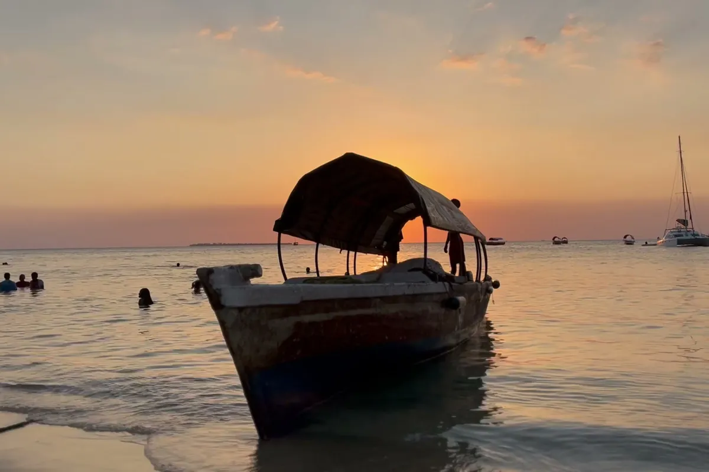
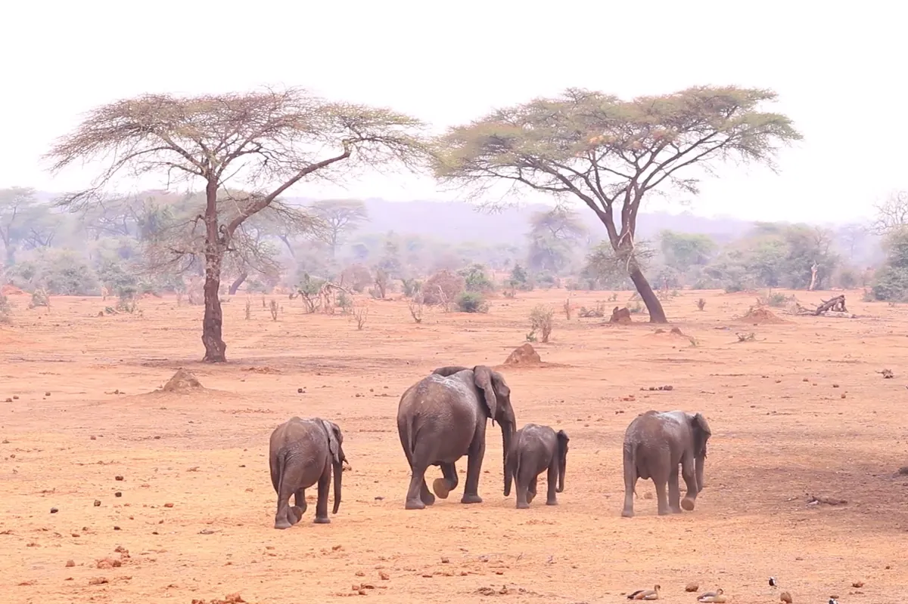

The Great Migration
Two mobile camps that follow the herds, a full day on the floor of the Ngorongoro crater, and a dawn balloon over the river crossings. Flying safari between camps.
From SAR 29,500You leave after dinner. By the time the clouds open, the land below is Tanzania.
Five hours south, the clouds thin and the earth turns red.
One stop at Kilimanjaro, then a light aircraft over the plains. Lunch is served under an acacia.
This is the day, as you will see it.
Follow the journeyAt Kilimanjaro you walk from the airliner to a Cessna Caravan. Twelve seats, one pilot, and a window each. The door closes, the plains unroll under the wing, and you can see the shadow of the aircraft crossing the grass.
Fourteen thousand square kilometres of grass and acacia, with no fence on any side. From this height you can already count the wildebeest. The pilot banks once, and the airstrip appears as a red line in the green.


No terminal and no queue. Your guide stands beside a Land Cruiser with the roof already up and cold water in the box. The bags go in the back, you climb in, and the first game drive begins on the way to camp.
You stop. He does not. A male lion uses the track because it is easier than the grass, and passes a metre from the door without looking up. The engine is off, the guide's voice is low, and nobody reaches for a phone until he is gone.
In migration season the herds cross the track for twenty minutes at a time, and you switch the engine off and wait. Nobody minds. It is the best twenty minutes of the day.
The central Serengeti is bigger than Qatar and holds a few hundred vehicles on a busy day. Your guide knows the tracks the others do not take. Most of the day, the only dust you see is your own.
Real footage, real distances. On a Samur safari the animals are never fed, called or touched; the vehicle stops, the roof goes up, and they decide how close to come.


A tented camp is not camping. The walls are canvas, but the floor is hardwood, the bed is a real bed, and the bathroom has a hot shower. Breakfast is on the deck, the zebras are on the grass in front of it, and the kitchen cooks halal from the first meal to the last.


Two tiers on every journey. Luxury means a pool on a kopje and a suite with its own deck. Beyond means a private camp, a private chef and a private aircraft. Both keep prayer times, serve halal, and have a family suite where the children sleep two doors from you.
The afternoon drive ends when the sun does. Maghrib is prayed back at camp, dinner is on the deck, and the generator goes quiet at ten so that the only sound left is the plain.
No town for a hundred kilometres and no light but the fire. The tea is sweet, the blankets come out, and somewhere you cannot see, the hyenas start to call.
Fajr, coffee, warm blankets in the car. The first hour of light is when the cats move and the air still smells of rain. You are there for it, and back at camp for a second breakfast by ten.

An hour in the air at first light, drifting over herds that do not look up, and a breakfast laid out wherever the basket lands. Included in two of the five journeys, and worth every early alarm.

Ninety minutes in the air. The mountain passes on the left, the Indian Ocean opens ahead, and the red earth turns to white sand before you have finished your coffee.

A Swahili town of coral stone and Omani doors, where Arabic is still read on the lintels and the mosques are older than most countries. The coffee is spiced, the market smells of cloves, and you will feel oddly at home.
The same sail the Omani traders used, on the same water. Out at five, back by dark, with fruit on board and nothing to do but watch the sun go into the sea.
Three or four nights at the end of every journey. A villa with its own pool, a beach where the tide goes out for a kilometre, and a sea warm enough for the children at seven in the morning.
Each one comes with flights, camps, guide, transfers and the e-visa, priced in riyals per person. Change anything and we rebuild the price the same day.

Two mobile camps that follow the herds, a full day on the floor of the Ngorongoro crater, and a dawn balloon over the river crossings. Flying safari between camps.
From SAR 29,500
Five nights of game drives in Tarangire and the central Serengeti, then a short flight to the coast for four nights on Nungwi beach. The journey most families book first.
From SAR 34,900
Bush planes carry you between three camps in the southern and northern Serengeti, so every morning and afternoon is spent with the animals, not on the road. Balloon included.
From SAR 38,500
Short drives, family suites with pools, a guide who turns every drive into a story, and three days of sea at the end. Children from six; one family of up to eight.
From SAR 31,500 per adult · children from SAR 18,900
One private camp, one private aircraft, one private island villa. A chef who cooks what you grew up with, and nobody else on the horizon. Up to ten guests.
From SAR 68,000
Tell us when you can travel and who is coming. We reply within a day, in Arabic or English, with a first itinerary and price.